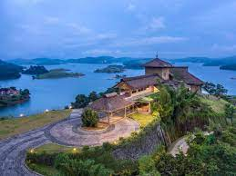

Marani Beach
Marina Beach, or simply the Marina, is a natural urban beach in Chennai, Tamil Nadu, India, along the Bay of Bengal. The beach runs from near Fort St. George in the north to Foreshore Estate in the south.
3 to 4 hours
Suggested time
EXPLORE

Kumarakon
Kumarakom is a small village 14 km. west of Kottayam. It is a part of Kuttanad, which is a ' wonder land ', lying below sea level, comprising of a number of islands, in the back waters.
1 to 2 days
Suggested time
EXPLORE

Thekkady
Thekkady (Idukki district) is a town near Periyar National Park, an important tourist attraction in the Kerala state of India. The name Thekkady is derived from the word "thekku" which means teak.
1 to 2 days
Suggested time
EXPLORE

Munnar
Munnar got its name from its strategic location at the confluence of three rivers – Muthirapuzha, Nallathanni and Kundala Rivers. 'Moonu' means 'three' and 'Aru' means 'river'. The region is placed at a height of around 1,500 m to 2,695 m above sea level.
4 to 5 hours
Suggested time
EXPLORE

Kannur
Kannur is believed to have got its name from being the land of Kannan or Krishna. True to the legend there are many famous temples in the region. The district is also famous for many alluring spots of interest including Payyambalam and Muzhuppilangadi beach
1 to 2 days
Suggested time
EXPLORE

Wayanad
Wayanad is in the north-east of Kerala state with administrative headquarters at the municipality of Kalpetta. Wayanad District came into existence on 1st November, 1980 as the 12th District of Kerala consisting of Mananthavady, Sulthanbathery and Vythiri Taluks.
1 to 2 days
Suggested time
EXPLORE